A Quantum Convolution to Remember
revealOptions: transition: ‘fade’ transitionSpeed: ‘fast’ width: 1400 —
Using JAX with pennylane
- Results in huge speedup even on cpu.
- jax.vmap transform to make running batches of circuits much easier.
- vmap essentially transforms a single quantum computer into multiple running in parallel!
Model Architecture
Padding: Same - Kernel: (3,3): Strides: (1,1)

Results on EP
Center crop to (8,8). Standardized
╒════════╤══════════════════╤══════════════════╤══════════════════╤═══════════╕
│ Data │ Train size │ Val size │ Test size │ Dims │
╞════════╪══════════════════╪══════════════════╪══════════════════╪═══════════╡
│ X │ (90000, 8, 8, 1) │ (10000, 8, 8, 1) │ (20000, 8, 8, 1) │ (8, 8, 1) │
├────────┼──────────────────┼──────────────────┼──────────────────┼───────────┤
│ y │ (90000, 2) │ (10000, 2) │ (20000, 2) │ (2,) │
╘════════╧══════════════════╧══════════════════╧══════════════════╧═══════════╛
╒══════════════╤═══════╤════════╤════════╤═══════╤══════════════════════════╕
│ Type │ Min │ Max │ Mean │ Std │ Samples for each class │
╞══════════════╪═══════╪════════╪════════╪═══════╪══════════════════════════╡
│ Train Images │ -2.88 │ 106.87 │ 0 │ 1 │ [45000, 45000] │
├──────────────┼───────┼────────┼────────┼───────┼──────────────────────────┤
│ Val Images │ -2.88 │ 58.46 │ -0 │ 0.99 │ [5000, 5000] │
├──────────────┼───────┼────────┼────────┼───────┼──────────────────────────┤
│ Test Images │ -2.88 │ 64.88 │ -0 │ 0.98 │ [10000, 10000] │
╘══════════════╧═══════╧════════╧════════╧═══════╧══════════════════════════╛
Results
1 QConv2D Layer
Best Test Acc: 0.6998 | AUC: 0.7518
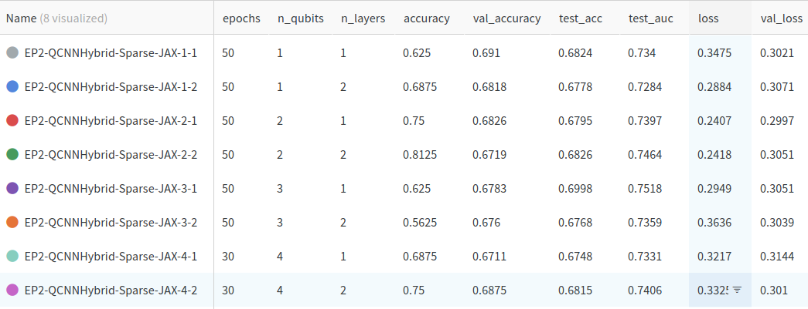
Results on QG
Center crop to (40,40). Log Scaled. Standardized.
╒════════╤════════════════════╤═══════════════════╤════════════════════╤═════════════╕
│ Data │ Train size │ Val size │ Test size │ Dims │
╞════════╪════════════════════╪═══════════════════╪════════════════════╪═════════════╡
│ X │ (95000, 40, 40, 1) │ (5000, 40, 40, 1) │ (20000, 40, 40, 1) │ (40, 40, 1) │
├────────┼────────────────────┼───────────────────┼────────────────────┼─────────────┤
│ y │ (95000, 2) │ (5000, 2) │ (20000, 2) │ (2,) │
╘════════╧════════════════════╧═══════════════════╧════════════════════╧═════════════╛
╒══════════════╤═══════╤═══════╤════════╤═══════╤══════════════════════════╕
│ Type │ Min │ Max │ Mean │ Std │ Samples for each class │
╞══════════════╪═══════╪═══════╪════════╪═══════╪══════════════════════════╡
│ Train Images │ -0.2 │ 14.61 │ -0 │ 1 │ [47500, 47500] │
├──────────────┼───────┼───────┼────────┼───────┼──────────────────────────┤
│ Val Images │ -0.2 │ 14.61 │ 0 │ 1.01 │ [2500, 2500] │
├──────────────┼───────┼───────┼────────┼───────┼──────────────────────────┤
│ Test Images │ -0.2 │ 14.61 │ 0 │ 1 │ [10000, 10000] │
╘══════════════╧═══════╧═══════╧════════╧═══════╧══════════════════════════╛
Results
1 QConv2D Layer
Best Test Acc: 0.6367 | AUC: 0.6887

Results on EP dataset with QCNN Hybrid
380k Train | 20k val | 98k Test - 1 QConv2D Layer - 1 qubit - 1 layer
Best Test Acc: 0.6875 | AUC: 0.7415
 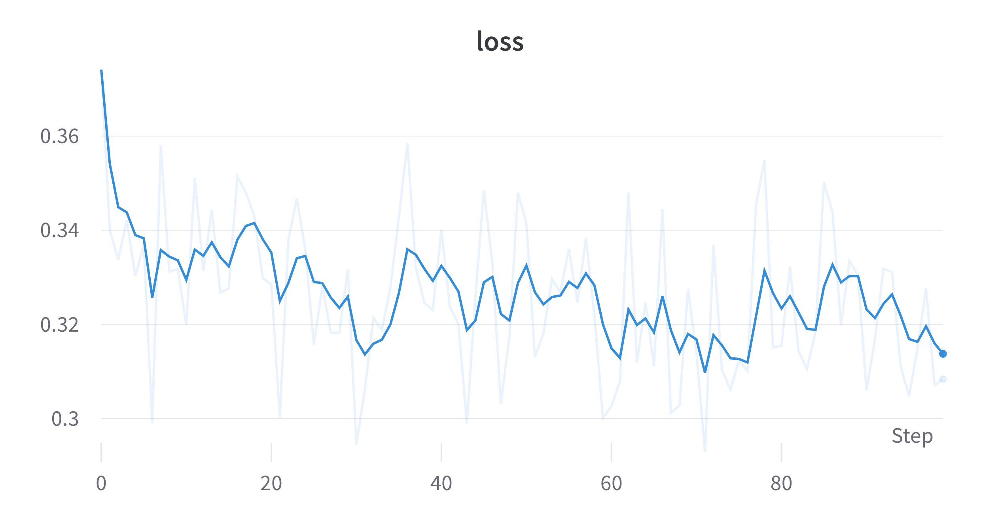
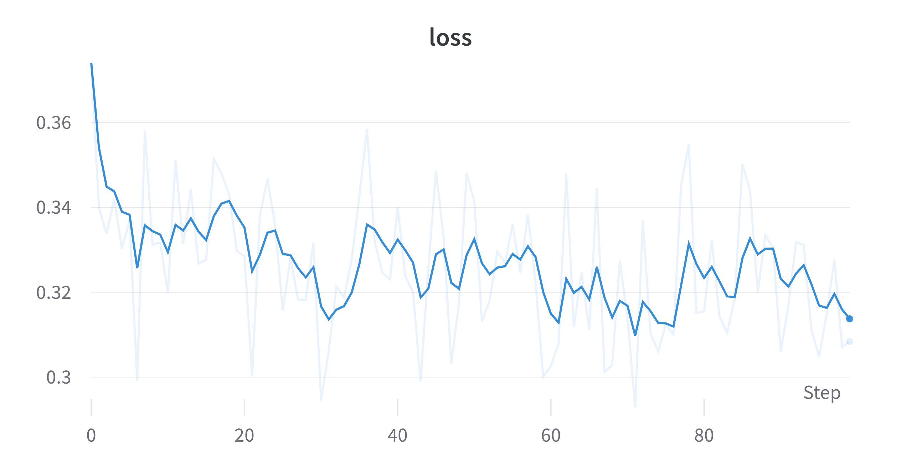
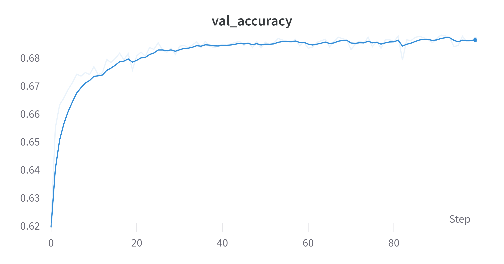
Resnet Residual block like Architecture
380k Train | 20k val | 98k Test - 1 QConv2D Layer - 1 qubit - 1 layer
Best Test Acc: 0.6875 | AUC: 0.7406
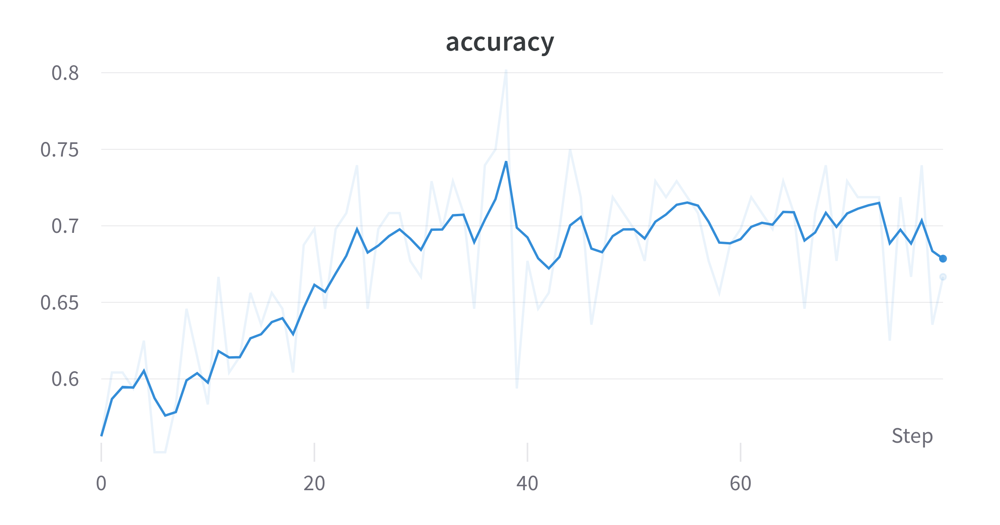
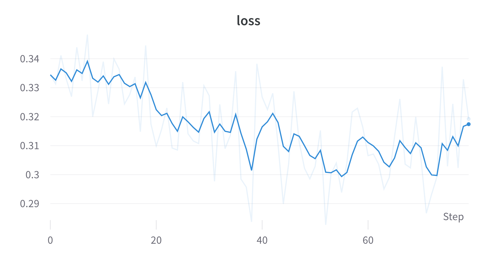
 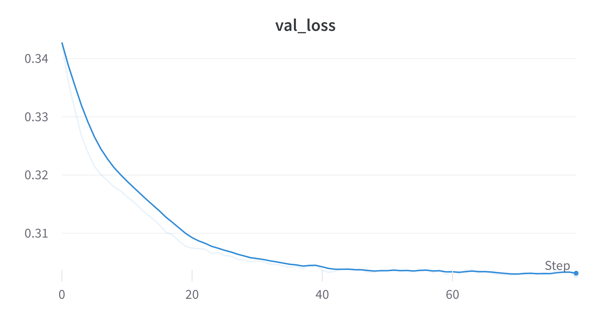
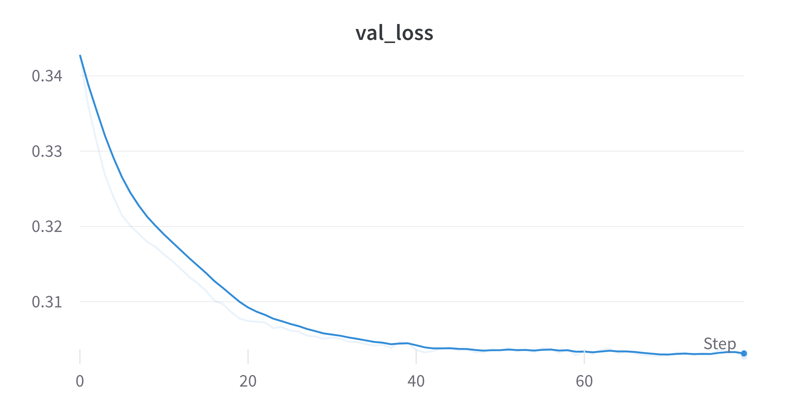
Results on QG dataset with QCNN Hybrid
665k Train | 35k val | 93.9k Test - 1 QConv2D Layer - 1 qubit - 1 layer
Test Acc: 0.6215 | AUC: 0.6666
 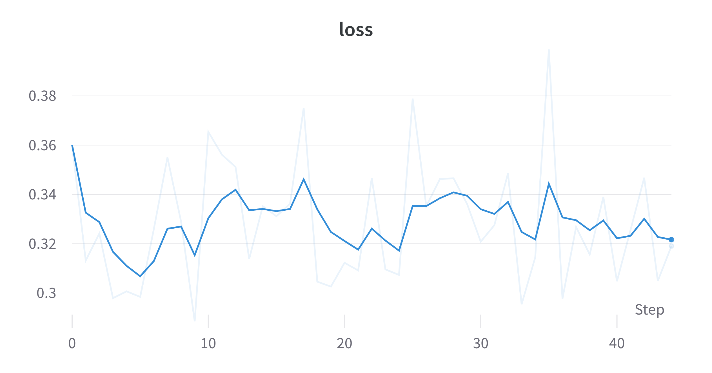
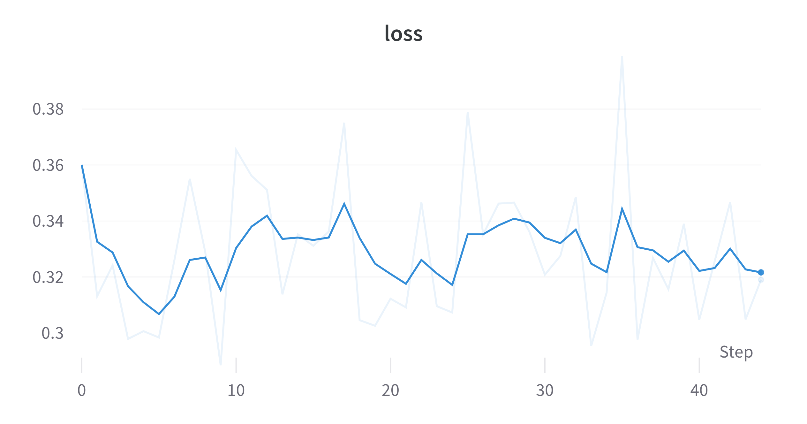
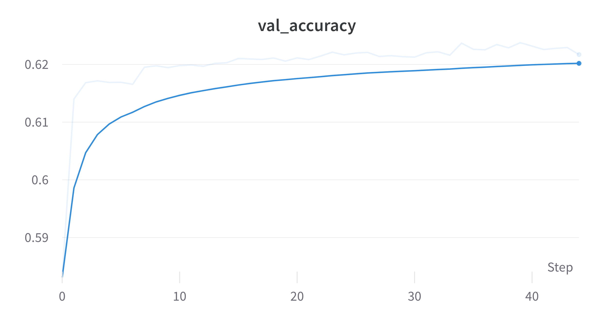
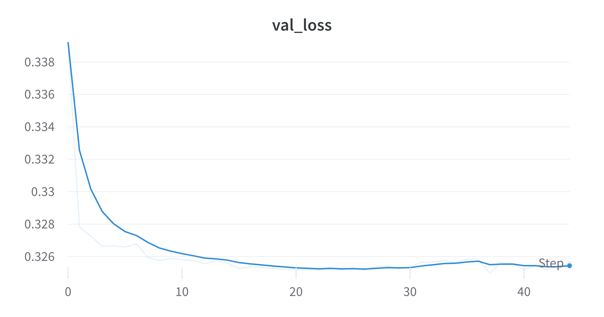
Status
Done:
- Trained QCNNHybrid on EP and QG with JAX + Pennylane.
- Created methods to handle multiple filters for Convolution.
Goals for next week:
- Training with more filters and QConv layers might increase AUC.
- Training fully Quantum models.
- Benchmarking classical CNNs with similar parameters.
Questions:
- Feedback about Accuracy? Is it reasonable?